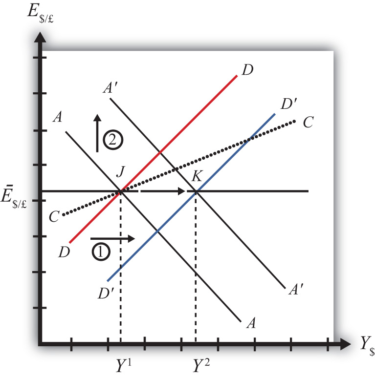

In this section, we use the AA-DD model to assess the effects of fiscal policy in a fixed exchange rate system. Recall from Chapter 19 "National Output Determination" that fiscal policy refers to any change in expenditures or revenues within any branch of the government. This means any change in government spending (e.g., transfer payments or taxes) by federal, state, or local governments represents a fiscal policy change. Since changes in expenditures or revenues will often affect a government budget balance, we can also say that a change in the government surplus or deficit represents a change in fiscal policy.
When government spending or transfer payments increase, or tax revenues decrease, we refer to it as expansionary fiscal policy. These actions would also be associated with an increase in the government budget deficit, or a decrease in its budget surplus. If the government acts to reduce government spending or transfer payments, or increase tax revenues, it is referred to as contractionary fiscal policy. These actions would also be associated with a decrease in the government budget deficit, or an increase in its budget surplus.
Suppose the United States fixes its exchange rate to the British pound at the rate Ē$/£. This is indicated in Figure 23.2 "Expansionary Fiscal Policy with a Fixed Exchange Rate" as a horizontal line drawn at Ē$/£. Suppose also that the economy is originally at a superequilibrium shown as point J with GNP at level Y1. Next, suppose the government decides to increase government spending (or increase transfer payments or decrease taxes). As shown in Chapter 20 "The AA-DD Model", Section 20.3 "Shifting the DD Curve", fiscal policy changes cause a shift in the DD curve. More specifically, an increase in government spending (or an increase in transfer payments or a decrease in taxes) will cause DD to shift rightward (i.e., ↑G, ↑TR, and ↓T all are DD right-shifters). This is depicted in the diagram as a shift from the red DD to the blue D′D′ line (step 1).
Figure 23.2 Expansionary Fiscal Policy with a Fixed Exchange Rate
If the expansionary fiscal policy occurs because of an increase in government spending, then government demand for goods and services (G&S) will increase. If the expansionary fiscal policy occurs due to an increase in transfer payments or a decrease in taxes, then disposable income will increase, leading to an increase in consumption demand. In either case, aggregate demand increases. Before any adjustment occurs, the increase in aggregate demand causes aggregate demand to exceed aggregate supply, which will lead to an expansion of GNP. Thus the economy will begin to move rightward from point J.
As GNP rises, so does real money demand, causing an increase in U.S. interest rates. With higher interest rates, the rate of return on U.S. assets rises above that in the United Kingdom and international investors increase demand for dollars (in exchange for pounds) on the private Forex. In a floating exchange rate system this would lead to a U.S. dollar appreciation (and pound depreciation)—that is, a decrease in the exchange rate E$/£.
However, because the country maintains a fixed exchange rate, excess demand for dollars on the private Forex will automatically be relieved by the U.S. Federal Reserve (or the Fed) intervention. The Fed will supply the excess dollars demanded by buying pounds in exchange for dollars at the fixed exchange rate. As we showed in Chapter 21 "Policy Effects with Floating Exchange Rates", Section 21.5 "Foreign Exchange Interventions with Floating Exchange Rates", the foreign currency purchases by the Fed result in an increase in the U.S. money supply. This is because when the Fed sells dollars in the private Forex, these dollars are entering into circulation and thus become a part of the money supply. The increase in the money supply causes the AA curve to shift up (step 2). The final equilibrium will be reached when the new A′A′ curve intersects the D′D′ curve at the fixed exchange rate (Ē$/£) shown at point K.
Note that in the transition, the Fed intervention in the Forex occurred because investors responded to rising U.S. interest rates by increasing demand for dollars on the Forex. The Fed’s response causes an increase in the money supply, which in turn will lower interest rates back to their original level. This result is necessary to maintain the fixed exchange rate interest rate parity (IRP) condition of i$ = i£.
Note also that as GNP increases in the transition, causing interest rates to rise, this rise is immediately countered with automatic Fed intervention in the Forex. Thus the exchange rate will never fall below the fixed rate. There will be pressure for the exchange rate to fall, but the Fed will always be there to relieve the pressure with its intervention. Thus the adjustment path from the original equilibrium at J to the final equilibrium at K will follow the rightward arrow between the two points along the fixed exchange rate.
The final result is that expansionary fiscal policy in a fixed exchange rate system will cause an increase in GNP (from Y1 to Y2) and no change in the exchange rate in the short run. Since the new equilibrium at K lies below the original CC curve representing a fixed current account balance, expansionary fiscal policy, consisting of an increase in G, will cause the current account balance to fall. This corresponds to a decrease in a trade surplus or an increase in a trade deficit.
Contractionary fiscal policy corresponds to a decrease in government spending, a decrease in transfer payments, or an increase in taxes. It would also be represented by a decrease in the government budget deficit or an increase in the budget surplus. In the AA-DD model, a contractionary fiscal policy shifts the DD curve leftward. The effects will be the opposite of those described above for expansionary fiscal policy. A complete description is left for the reader as an exercise.
The quick effects, however, are as follows. Contractionary fiscal policy in a fixed exchange rate system will cause a decrease in GNP and no change in the exchange rate in the short run. Contractionary fiscal policy, consisting of a decrease in G, will also cause the current account balance to rise. This corresponds to an increase in a trade surplus or a decrease in a trade deficit.
Sri Lanka fixes its currency, the Sri Lankan rupee (LKR), to the U.S. dollar. Suppose Sri Lanka can be described using the AA-DD model. Consider changes in the exogenous variables in Sri Lanka in the left column. Suppose each change occurs ceteris paribus. Indicate the short-run effects on the equilibrium values of Sri Lankan GNP, the Sri Lankan interest rate (iLKR), the Sri Lankan trade deficit, and the exchange rate (ELKR/$). Use the following notation:
+ the variable increases
− the variable decreases
0 the variable does not change
A the variable change is ambiguous (i.e., it may rise, it may fall)
| GNP | iLKR | Sri Lankan Trade Deficit | ELKR/$ | |
|---|---|---|---|---|
| A decrease in domestic taxes | ||||
| An increase in government demand | ||||
| An increase in transfer payments |
Consider the following occurrences. Use the AA-DD model to determine the impact on the variables (+, −, 0, or A) from the twin-deficit identity listed along the top row. Consider only short-run effects (i.e., before inflationary effects occur) and assume ceteris paribus for all other exogenous variables.
| Impact on | ||||
|---|---|---|---|---|
| Sp | I | IM − EX | G + TR − T | |
| A reduction in government spending with a fixed exchange rate | ||||
| An increase in transfer payments with fixed exchange rates | ||||
| A decrease in taxes with fixed exchange rates | ||||